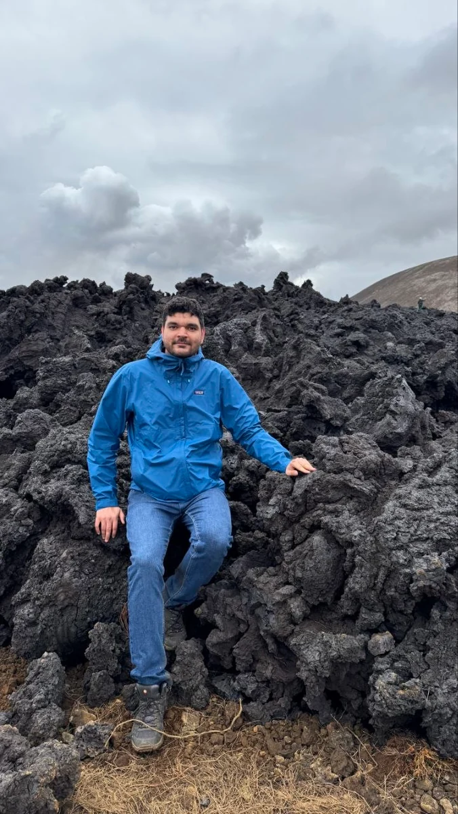
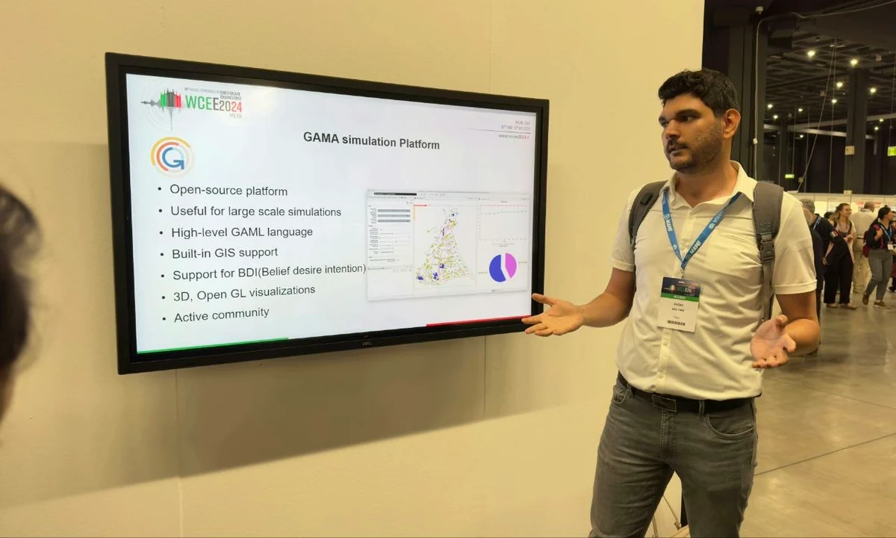

Saeed Soltani, PhD
Tsunami risk researcher
Manager of the European Tsunami Risk Service (ETRiS)
I study how tsunami hazards, population exposure and human behaviour influence the probability of safe evacuation.
Probabilistic Tsunami Hazard Analysis (PTHA), population exposure and Agent-Based Modelling (ABM) are combined to assess evacuation outcomes under uncertainty.


Research and scientific service management
I am an early-career researcher with a PhD in Earth and Environmental Sciences from Université Grenoble Alpes, France, in collaboration with the International Institute of Earthquake Engineering and Seismology (IIEES), Iran. My background includes seismic hazard, site effects and physics-based ground-motion simulation.
From January 2024 to September 2026, I was a postdoctoral researcher at the University of Naples Federico II within the Horizon Europe Geo-INQUIRE project (Geosphere INfrastructures for QUestions into Integrated REsearch).
During this period, I had the opportunity to undertake two research visits: one with the SocSim-K research team at the Grenoble Informatics Laboratory (LIG), France, and another at University College London (UCL), UK. These experiences allowed me to expand my expertise in agent-based modelling, advance my research in probabilistic tsunami risk and strengthen international scientific collaborations.
My work focused on managing the European Tsunami Risk Service (ETRiS) and conducting research in Probabilistic Tsunami Risk Assessment (PTRA) and agent-based evacuation modelling.
I am also interested in scientific data curation, reproducible computational workflows and specialist training within the European Plate Observing System (EPOS).
Research activities
Probabilistic tsunami risk assessment
Collaborative research on scenario-based tsunami risk integrates hazard, exposure and building vulnerability to estimate economic losses and explore uncertainty.
Seismic hazard and site effects
My doctoral research integrated geological and geophysical data into a 3D shear-wave velocity model of the Tehran sedimentary basin to assess site effects, simulate ground motion using physics-based methods and investigate their implications for seismic risk assessment.
Open science and research infrastructures
I contribute to tsunami-risk data curation, metadata, reproducible Jupyter workflows and integration of scientific resources through ETRiS and EPOS.
Projects & professional activities
European Tsunami Risk Service (ETRiS)
Manager since January 2024. ETRiS provides open access to data, models, software and tools for probabilistic tsunami risk assessment. I lead monthly service meetings, coordinate activities, maintain and curate data and metadata according to FAIR (Findable, Accessible, Interoperable and Reusable) principles, monitor statistics and contribute to reporting, training and scientific outreach.
EPOS and Geo-INQUIRE
I am part of the Tsunami Thematic Core Service (TCS) of the European Plate Observing System (EPOS). I sometimes contribute to exchanges with Integrated Core Services (ICS), service integration and workflows.
ETRiS: collective service outputs and reach
Publications & research outputs
Peer-reviewed articles
3D shear-wave velocity model of Tehran’s sedimentary basin using geological and geophysical data
3D shear-wave velocity model of Tehran’s sedimentary basin using geological and geophysical data
Soltani, S., Haghshenas, E., Guillier, B., & Cornou, C. (2025). Bulletin of Engineering Geology and the Environment.
Experimental assessment of ground seismic response before and after twin tunnels excavation and comparison with numerical modelling
Experimental assessment of ground seismic response before and after twin tunnels excavation and comparison with numerical modelling
Ahmadi, F., Haghshenas, E., Kamalian, M., & Soltani, S. (2025). Iranian Journal of Science and Technology, Transactions of Civil Engineering.
On the optimal parametrization of initial models in surface wave inversion in deep basins
On the optimal parametrization of initial models in surface wave inversion in deep basins
Soltani, S., JavanDoloei, G., & Haghshenas, E. (2021). Journal of Research on Applied Geophysics.
Selected conference contributions
From PTHA to Probability of Safe Evacuation: An Agent-Based Modelling (ABM) Use Case for EPOS ICS-D
From PTHA to Probability of Safe Evacuation: An Agent-Based Modelling (ABM) Use Case for EPOS ICS-D
Soltani, S., Jalayer, F., Lorito, S., Volpe, M., Dugdale, J., Ebrahimian, H., Ghaffarian, S., & Abbate, A. (2026). EGU General Assembly 2026.
Probabilistic Coastal Tsunami Evacuation Modelling Using Agent-Based Modelling in Catania, Italy
Probabilistic Coastal Tsunami Evacuation Modelling Using Agent-Based Modelling in Catania, Italy
Soltani, S., Jalayer, F., Dugdale, J., Ghaffarian, S., Volpe, M., Lorito, S., & Ebrahimian, H. (2025). EGU General Assembly 2025.
Scenario-based Probabilistic Tsunami Risk Analysis for Coquimbo Bay
Scenario-based Probabilistic Tsunami Risk Analysis for Coquimbo Bay
Jalayer, F., Ebrahimian, H., Catalan, P., Zamora, N., & Soltani, S. (2024). EGU General Assembly 2024.
Simulations of ground motion in the Tehran basin based on a newly developed 3D velocity model
Simulations of ground motion in the Tehran basin based on a newly developed 3D velocity model
Soltani, S., Cornou, C., Guillier, B., & Haghshenas, E. (2023). EGU General Assembly 2023.
Open data & training materials
From Scenarios to Consequences: Probabilistic Tsunami Risk Analysis (PTRA) with Geo-INQUIRE Services (Version 1.0.0)
From Scenarios to Consequences: Probabilistic Tsunami Risk Analysis (PTRA) with Geo-INQUIRE Services (Version 1.0.0)
Jalayer, F., Ebrahimian, H., Soltani, S., Abbate, A., Babeyko, A., Lanucara, P., Lorito, S., Løvholt, F., Oostwegel, L. J., Ragu Ramalingam, N., Salmanidou, D., & Silva, V. (2026). Simulation Data Lake.
ETRiS Data and Data Products, Version 1.00
ETRiS Data and Data Products, Version 1.00
Jalayer, F., Ebrahimian, H., & Soltani, S. (2025). Zenodo.
Teaching & workshops
Geo-INQUIRE PTRA Workshop · GFZ Potsdam
Invited lecturer and contributor to hands-on training, 1–4 June 2026, Germany. I presented agent-based tsunami evacuation modelling and contributed to Jupyter notebook exercises on probabilistic risk, exposure and safe evacuation.
Specialist instructor · University of Tehran
2019–2021: specialist courses in ambient-vibration methods and seismic site characterisation. 2022: MSc thesis advising at the University of Tehran.
News
Global Tsunami Model Strategy Meeting · Oslo
Participated in the international strategy meeting at NGI.
EPOS GO! Early Career Researcher Prize
Winner of the Early Career Researcher Challenge at the European Geosciences Union (EGU) General Assembly 2026.
EPOS Days · Cagliari
Rapporteur for Thematic Core Services discussions and presenter of an evacuation modelling workflow for EPOS ICS-D.
UCL Global Engagement Fund
Successful co-applicant.
Geo-INQUIRE training · Potsdam
Invited lecturer and contributor to published training materials.
Gallery
Research collaboration & contact
For scientific collaboration, tsunami risk modelling, research infrastructure services or specialist training, please contact me by email.